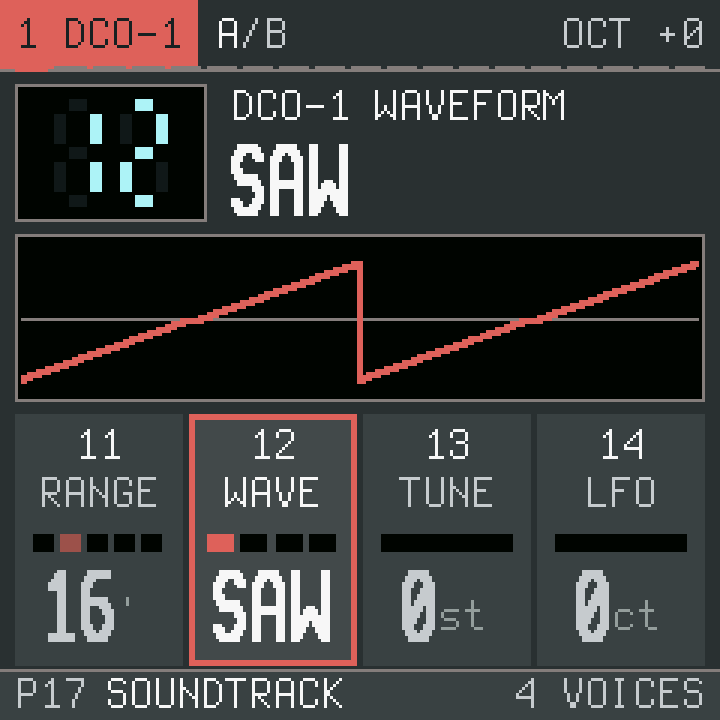
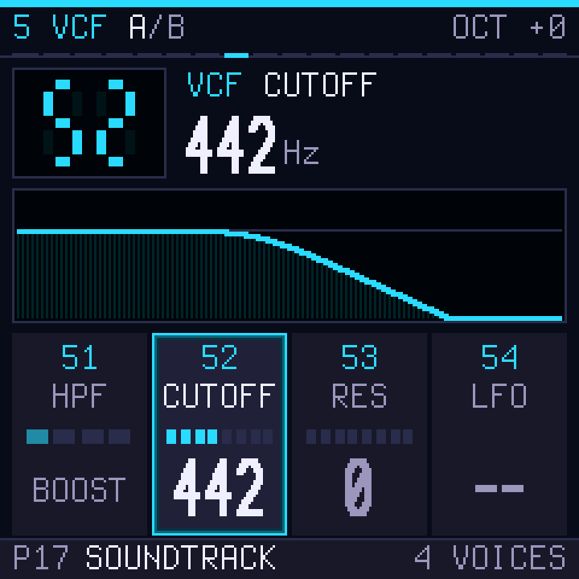
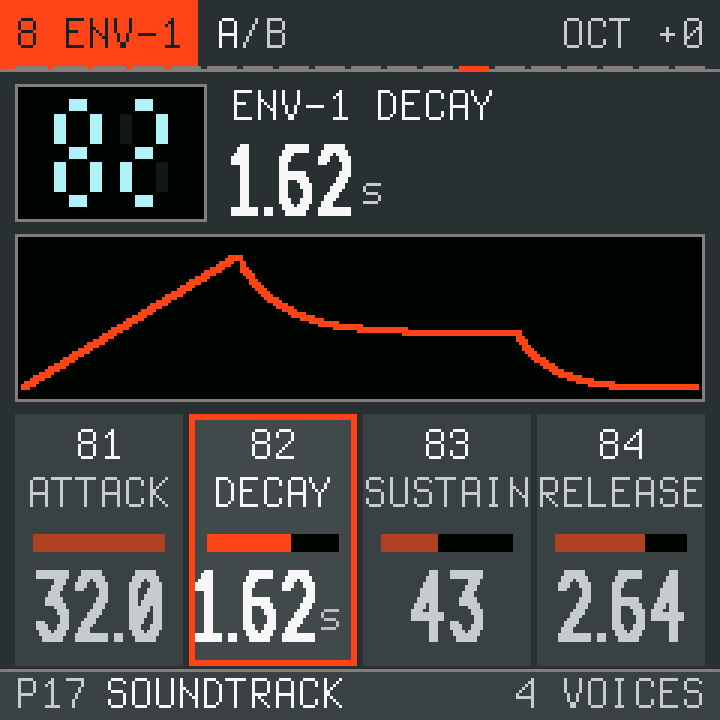
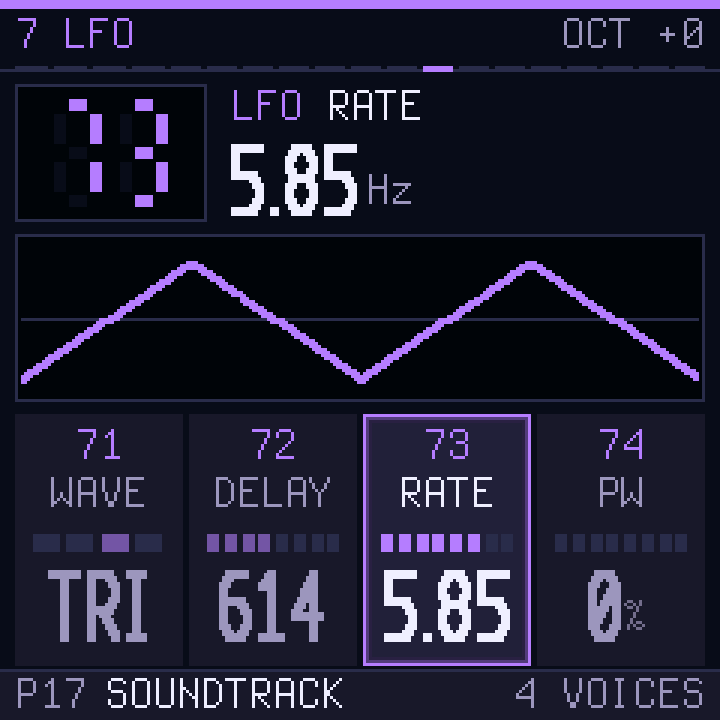
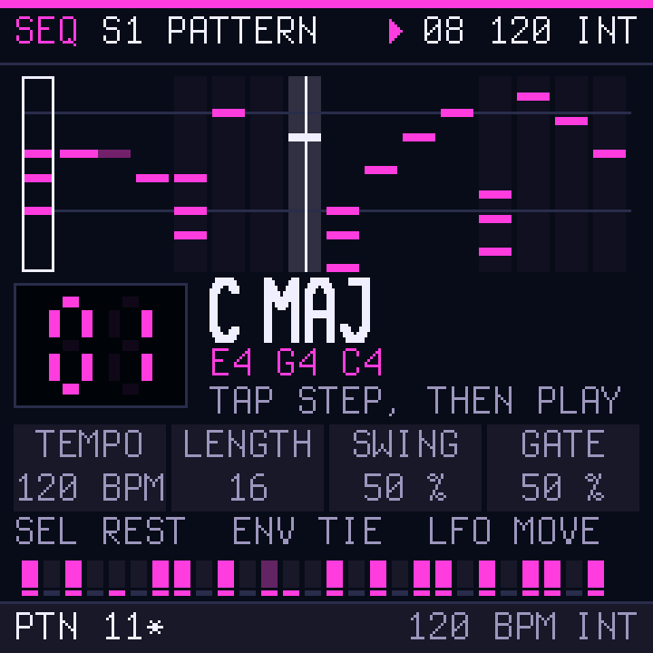

2 oscillators a voice
Saw, pulse, square or noise, with octave, fine tune, pulse width, sync and cross-mod.

Runs on the FM-1 today as an fm1-dock module
FM1-8P turns your M-VAVE FM-1 into a 4-voice analog-style synth with a 16-step sequencer and the 32 JX-8P factory tones. Play it from its keys or USB MIDI.


Saw, pulse, square or noise, with octave, fine tune, pulse width, sync and cross-mod.

A lowpass with key tracking and its own envelope, and a 4-position highpass.
One for the amp, one for the filter. Pitch and the oscillator mix can follow either.
Plus a chorus in 3 modes, a unison mode and glide.

The FM-1's white keys become 16 step keys. Each step holds a note, a chord, a tie or a rest, with its own velocity, bend and glide.

fm1-dock is Joakim Eriksson's firmware that runs synth modules on the FM-1. FM1-8P is one of them.
Send fm1_8p.dock with fm1-dock's own tools, or with the button below in Chrome or Edge.
It boots on {{BOOT_NUM}}, {{BOOT_NAME}}. Hold HOME, pick FM1-8P and play it from the keys or a USB MIDI keyboard.
How it runs on the FM-1 today. Keep your other fm1-dock synths and add the module beside them.
This installer has not been tested on an FM-1 yet. Wait for v0.1 unless you can recover your FM-1.
It writes the package, identity FM-1_948, over Web MIDI in Chrome or Edge. To go back, install V15 from the FM-1 Firmware Hub; hold OCT- at power-on for the USB rescue.
No FM-1 at hand? The current build also runs in Joakim Eriksson's fm1-emu. Press Start, then play with the computer keyboard, the mouse, a touch screen or a MIDI keyboard over Web MIDI.
Tone memory{{BOOT_NUM}} {{BOOT_NAME}} at boot
Yes. It runs on the FM-1 as an fm1-dock module, 4 voices, played from its keys or USB MIDI.
Yes, GPL-3.0-or-later. The source is on GitHub.
It needs Web MIDI with SysEx on a computer. Other browsers cannot reach the FM-1.
No. FM1-8P is an original engine; its 32 tones are the JX-8P factory bank, converted to its parameters.
Open an issue on GitHub, with the tone number and what you played.
Visits, emulator starts and whether installs succeed. The footer lists every detail.